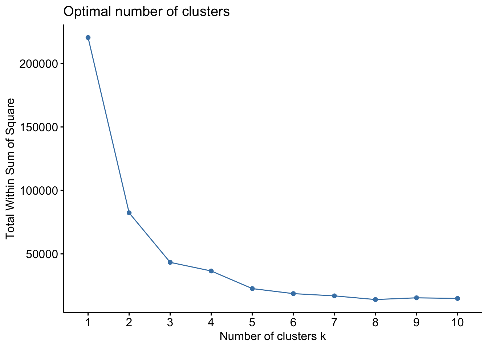
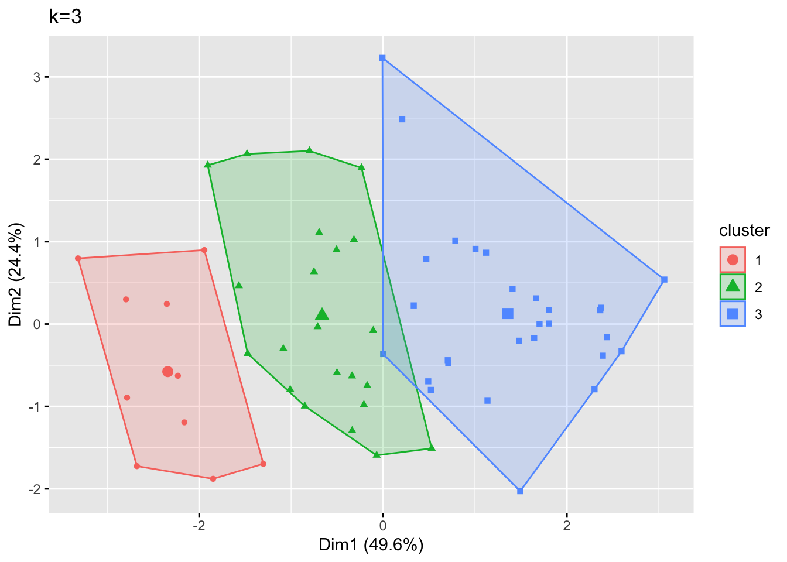
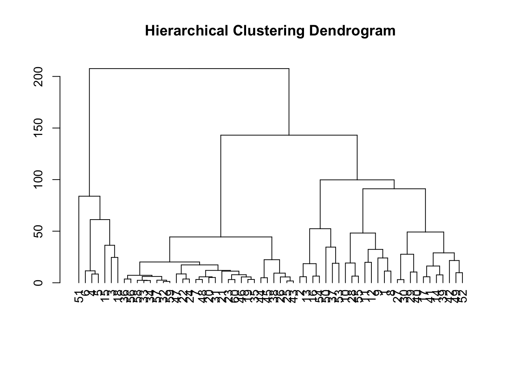

# set seed
set.seed(123)Link to GitHub repository
Background
To practice clustering analysis, we’ll use data from Roberts et al. 2008 on biological contaminants in Port Jackson Bay (located in Sydney, Australia). The data are measurements of metal content in two types of co-occurring algae at 10 sample sites around the bay.
Setup & import data
# load packages
library(tidyverse)
library(tidymodels)
library(cluster) # cluster analysis
library(factoextra) # cluster visualization# load data
metals_df <- readr::read_csv("../../data/2024-4-1-post-data/harbour_metals.csv")
# select only columns for pollutant variables
metals_df <- metals_df[, 4:8] K-means clustering
Find optimal k value & build model
# find optimal number of clusters using elbow method
fviz_nbclust(metals_df, kmeans, method = "wss")
The elbow method indicates that k=3 is the ideal number of clusters, as at this point, we see a very significant drop in the Total Within Sum of Square compared to k=2, followed by a very insignificant drop at k=4.
# build k-means cluster model with optimal number of clusters (3)
kmeans_model <- kmeans(metals_df, centers = 3, nstart = 25)Inspect clustering model
# plot the clusters
fviz_cluster(kmeans_model, geom = "point", data = metals_df) + ggtitle("k=3")
When we connect the outermost points in each cluster, we see that there is overlap between the far right side of cluster 2 and the far left side of cluster 3. The points near this boundary might have been assigned this way just because of the other nearby points that belonged to each cluster, or this could indicate that we should have chosen a larger number of clusters.
# inspect model object
kmeans_modelK-means clustering with 3 clusters of sizes 10, 22, 28
Cluster means:
Cd Cr Cu Mn Ni
1 0.796000 6.530000 127.09000 126.28200 2.304
2 1.076818 6.180455 70.28455 66.79864 2.385
3 1.593214 3.462857 22.39893 18.85250 1.870
Clustering vector:
[1] 2 2 1 1 1 1 3 2 2 2 2 2 2 2 1 2 2 1 3 3 3 3 3 3 3 3 2 2 2 2 3 3 3 3 3 3 1 3
[39] 2 3 2 2 3 3 3 3 3 3 2 1 1 2 1 2 2 3 3 3 3 3
Within cluster sum of squares by cluster:
[1] 13159.695 22633.706 7511.094
(between_SS / total_SS = 80.4 %)
Available components:
[1] "cluster" "centers" "totss" "withinss" "tot.withinss"
[6] "betweenss" "size" "iter" "ifault" Looking at the specific values, ‘size’, which give the number of points allocated to each of the three clusters, stands out because cluster 2 and cluster 3 both have more than double the number of points as cluster 1. In addition, our ‘withinss’ values, which give the within-cluster variation for each of the three clusters, stands out because cluster 3 has over five times more variation than cluster 1 and over three times more variation than cluster 2.
Hierarchical clustering
Calculate Euclidean distance matrix & build model
# calculate distance matrix
dist_matrix <- dist(metals_df, method = "euclidean")Each value in this matrix tells us the Euclidean distance between a set of two points in our data. There are 1770 rows in the table, one for each unique set of points.
# build clustering model
hc_model <- hclust(dist_matrix)Inspect clustering model
# plot the dendrogram of clustering model
plot(as.dendrogram(hc_model), main = "Hierarchical Clustering Dendrogram")
The dendrogram looks as expected. 51 is clearly an outlier point because starting from the bottom of the dendrogram and moving up, it is by far the last point to be assigned to a cluster that includes any other points besides itself, and when this assignment does occur, the point is about 80 distance units away from the centroid of the cluster it is assigned to. Comparatively, the point with the next highest distance away from the centroid of its initial assignment to a cluster containing more than just itself is 15, at about 40 distance units.
Conclusion
Our clustering analysis indicates that there are 3 major clusters of biological contaminating algae. For each cluster of algae, there are differing expected ranges of metal content across the five types of metal looked at (Cd, Cr, Cu, Mn, and Ni).
Citation
BibTeX citation:
@online{ghanadan2024,
author = {Ghanadan, Linus},
title = {Cluster {Analysis} of {Bio-Contaminating} {Algae} Based on
{Metal} {Content}},
date = {2024-03-29},
url = {https://linusghanadan.github.io/blog/2024-4-1-post/},
langid = {en}
}
For attribution, please cite this work as:
Ghanadan, Linus. 2024. “Cluster Analysis of Bio-Contaminating
Algae Based on Metal Content.” March 29, 2024. https://linusghanadan.github.io/blog/2024-4-1-post/.